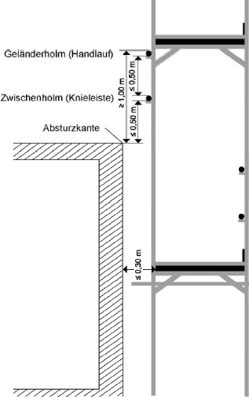
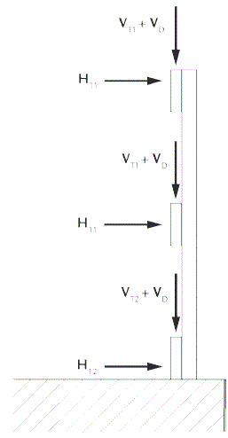

(1) Auf geneigten Flächen, auf denen die Gefahr des Abrutschens von Beschäftigten besteht, darf nur gearbeitet werden, nachdem Maßnahmen gegen das Abrutschen vom Arbeitsplatz getroffen worden sind.
(2) Für Arbeiten auf einer mehr als 45° geneigten Fläche (z. B. auf gelatteten Dachflächen oder Böschungen) sind besondere Arbeitsplätze mit mindestens 0,50 m breiten, waagerechten Standplätzen zu schaffen.
(3) Bei Arbeiten an und auf Flächen mit Neigungen von mehr als 22,5° bis 60° darf der Höhenunterschied zwischen Arbeitsplätzen oder Verkehrswegen und den Einrichtungen zum Auffangen abrutschender Beschäftigter nicht mehr als 5,00 m betragen.
(4) Für das Errichten, Instandhalten oder Umlegen von Masten für elektrische Betriebsmittel auf Dachflächen mit einer Neigung von mehr als 22,5° bis 60° müssen Einrichtungen zum Auffangen abrutschender Beschäftigter bei mehr als 2,00 m Absturzhöhe vorhanden sein.
(1) Arbeitsplätze und Verkehrswege auf Baustellen müssen zeitlich, räumlich und tätigkeitsbezogen festgelegt werden. Ein Arbeitsplatz auf einer Baustelle ist der zur Durchführung der Arbeiten erforderliche räumlich begrenzte Bereich, der einer bestimmten Anzahl von Beschäftigten von ihrem jeweiligen Arbeitgeber zugewiesen wird, um dort innerhalb eines bestimmten (möglicherweise auch nur kurzen) Zeitraums für einen abgrenzbaren Arbeitsschritt tätig zu werden. Beispiele für abgrenzbare Arbeitsschritte bei der Herstellung einer Geschossdecke sind insbesondere Einschalen, Bewehren, Betonieren oder Ausschalen.
Hinweis:
Zu Verkehrswegen auf Baustellen siehe ASR A1.8 "Verkehrswege" Punkt 7.1.
(2) Im Zuge des Baufortschritts verändern sich häufig die Anordnung sowie die Größe bzw. die Abmessungen von Arbeitsplätzen und Verkehrswegen. Ein Teilbereich einer Baustelle kann im Zuge des Baufortschritts tätigkeitsbezogen wechselnd als Arbeitsplatz oder Verkehrsweg festgelegt werden. Bei der gleichzeitigen Ausführung abgrenzbarer Arbeitsschritte kann ein Teilbereich einer Baustelle für Beschäftigte als Arbeitsplatz und für andere Beschäftigte als Verkehrsweg festgelegt sein.
(3) Muss ein Teilbereich eines Arbeitsplatzes zugleich als Verkehrsweg von anderen Beschäftigten desselben Arbeitgebers genutzt werden, so hat dieser Arbeitgeber diesen Verkehrsweg zuvor festzulegen und einzurichten.
(4) Muss ein Teilbereich eines Arbeitsplatzes zugleich Beschäftigten anderer Arbeitgeber als Verkehrsweg dienen, müssen sich die betroffenen Arbeitgeber hinsichtlich der Festlegung und Einrichtung der Verkehrswege abstimmen (§ 8 Arbeitsschutzgesetz (ArbSchG), § 6 DGUV Vorschrift 1).
Hinweis:
Bei der Festlegung und Einrichtung von Verkehrswegen auf Baustellen sind ggf. die Hinweise des Koordinators nach Baustellenverordnung (BaustellV) sowie der Sicherheits- und Gesundheitsschutzplan (SiGePlan) zu berücksichtigen.
(5) Wird ein als Verkehrsweg festgelegter Bereich von anderen Beschäftigten im Rahmen ihres Arbeitsauftrages als Arbeitsplatz genutzt, bleiben die Anforderungen an den Verkehrsweg davon unberührt. Der Arbeitgeber hat dafür zu sorgen, dass sich die Beschäftigten in diesem gemeinsam genutzten Bereich nicht gegenseitig gefährden.
(6) Eine Absturzgefahr besteht bei einer Absturzhöhe von mehr als 1 Meter.
(7) Schutzvorrichtungen, die ein Abstürzen von Beschäftigten verhindern (Absturzsicherungen), müssen vorhanden sein:
| a) | Arbeitsplätzen auf Baustellen am und über Wasser oder anderen festen oder flüssigen Stoffen, in denen man versinken kann, |
| b) | Verkehrswegen auf Baustellen über Wasser oder anderen festen oder flüssigen Stoffen, in denen man versinken kann; |
| a) | freiliegenden Treppenläufen und -absätzen, |
| b) | Wandöffnungen, |
| c) | allen übrigen Verkehrswegen auf Baustellen; |
Bei einer Absturzhöhe bis zu 3,00 m ist eine Schutzvorrichtung entbehrlich an Arbeitsplätzen und Verkehrswegen auf Dächern und Geschossdecken von baulichen Anlagen mit bis zu 22,5 Grad Neigung und nicht mehr als 50,00 m² Grundfläche, sofern die Arbeiten von hierfür fachlich qualifizierten und körperlich geeigneten Beschäftigten ausgeführt werden und diese Beschäftigten besonders unterwiesen sind. Die Absturzkante muss für die Beschäftigten deutlich erkennbar sein.
(8) Sind Schutzvorrichtungen, die ein Abstürzen von Beschäftigten verhindern (Absturzsicherungen) aufgrund der Eigenart des Arbeitsplatzes oder der durchzuführenden Arbeiten nicht geeignet, ist die Rangfolge der Maßnahmen zum Schutz vor Absturz nach Punkt 4.2 anzuwenden.
(9) Beim Einsatz von Fanggerüsten oder Arbeitsplattformnetzen ist an Verkehrswegen und Arbeitsplätzen eine Absturzhöhe in die Auffangeinrichtung bis 2,00 m zulässig. Beim Einsatz von Schutznetzen sind an Verkehrswegen und Arbeitsplätzen Absturzhöhen in die Auffangeinrichtung bis 3,00 m zulässig.
(10) Abweichend von Punkt 5.1 Absatz 2 beträgt die Mindesthöhe der Umwehrung 1,00 m. Bei der Verwendung von Systembauteilen ist eine Mindesthöhe von 950 mm zulässig. Die Höhe der Umwehrung darf entgegen Punkt 5.1 Absatz 2 Satz 2 nicht auf 0,80 m verringert werden.
(11) Umwehrungen sind so dicht wie möglich an der Absturzkante anzubringen. Davon darf unabhängig von der Absturzhöhe abgewichen werden, wenn Arbeitsplätze oder Verkehrswege höchstens 0,30 m von anderen tragfähigen und ausreichend bemessenen Umwehrungen entfernt liegen (siehe Abb. 5).

Abb. 5: Beispiel für abweichende Anordnung der Umwehrung
(12) Abweichend von Punkt 5.1 Absatz 5 müssen Umwehrungen Fußleisten von mindestens 0,15 m Höhe haben.
(13) Abweichend von Punkt 5.1 Absatz 7 müssen Umwehrungen so beschaffen und angebracht sein, dass an jeder Stelle normal zur Achse des Pfostens wirkend, eine Einzellast von HT1 und VT1 = 300 N und parallel zum Geländerholm wirkend von H = 200 N aufgenommen werden kann. Dabei darf die elastische Durchbiegung des Systems nicht größer als 5,5 cm sein. Die Fußleiste/Bordbrett muss abweichend hiervon eine Einzellast HT2 und VT2 = 200 N aufnehmen. Die Umwehrungen müssen so beschaffen und befestigt sein, dass an allen Seitenschutzbauteilen zusätzlich eine vertikal wirkende Einzellast von VD = 1250 N aufgenommen werden kann (siehe Abb. 6).

Abb. 6: Ansatzpunkte der Vertikal- und Horizontallasten
(14) Für Bauarbeiten in bestehenden Gebäuden ist im Rahmen der Gefährdungsbeurteilung zu prüfen, ob vorhandene Absturzsicherungen den Anforderungen dieser ASR entsprechen oder ob ergänzende Maßnahmen erforderlich sind.
Abweichend von Punkt 5.3 Abs. 1 müssen Wandöffnungen, bei denen eine Absturzgefährdung besteht, und die breiter als 0,30 m und höher als 1,00 m sind und die nicht über die nach Punkt 5.1 Abs. 2 und 3 erforderliche Brüstungshöhe verfügen, fest angebrachte oder bewegliche Umwehrungen haben. Sie müssen mit einer Sicherung gegen unbeabsichtigtes Öffnen oder Ausheben versehen sein.
(1) Ergänzend zu Punkt 6.1 sind Schütt-Trichter über Arbeitsplätzen und Verkehrswegen so auszubilden, dass Beschäftigte und andere Personen nicht durch überschüttetes Material getroffen werden können.
(2) Ergänzend zu Punkt 6.1 sind Traggerüste sowie Verbau von Gruben, Gräben und Schächten von losen Gegenständen freizuhalten.